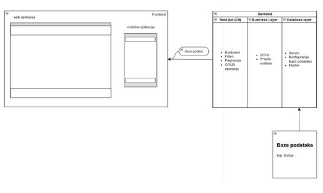

PAMETNO UPRAVLJANJE REZERVACIJAMA
IdleReservations
Digitalno rješenje za jednostavnije upravljanje rezervacijama, bolju iskoristivost stolova i kvalitetnije korisničko iskustvo.
O PROJEKTU
Jednostavnije rezervacije za moderne restorane
IdleReservations pomaže restoranima smanjiti prazne termine, bolje organizirati raspoložive stolove i unaprijediti komunikaciju s gostima.
Brze rezervacije
Gosti mogu brzo i jednostavno rezervirati termin bez kompliciranog procesa.
Pregled dostupnosti
Restoran u svakom trenutku ima pregled zauzetosti i raspoloživih stolova.
Bolja organizacija
Sustav olakšava upravljanje rezervacijama i smanjuje neiskorištene kapacitete.

PREGLED SUSTAVA
Čist i pregledan pristup radu
Fokus je na jednostavnom korisničkom sučelju, brzom pristupu informacijama i jasnom prikazu rezervacija, stolova i obavijesti.
- pregled rezervacija na jednom mjestu
- jednostavno upravljanje statusima
- prilagodljivo za osoblje i administraciju
IDUĆI KORAK
Rezervacije bez kaosa
Digitaliziraj proces rezervacija i unaprijedi svakodnevni rad restorana.
Isprobaj rješenje